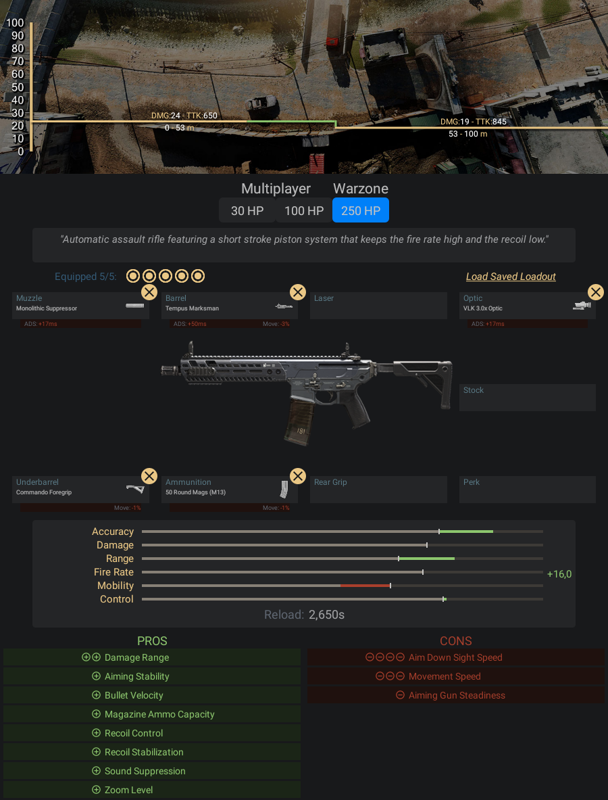

Fuzil de assalto automático com um sistema de pistão de curso curto que permite alta
cadência de tiro e recuo menor.
- Pontos Positivos:
- -Versatilidade para curta e média distância por conta da cadência e seu dano
- -Controle do recuo é fácil de controlar
- Pontos Negativos:
- -Pouco dano para longa distância comparado aos outros fuzis e a alta cadência
- também atrapalha em batalhas a longa distância pelo desperdício de bala
Informações e dicas de como fazer uma classe da M13:
Acessórios para M13:
- Boca - Surpressor Monolítico
- Cano - Tempus Marksman
- Lente - VLK 3.0x
- Acoplamento - Empunhadora de Comando
- Munição - Carregador de 50 projéteis